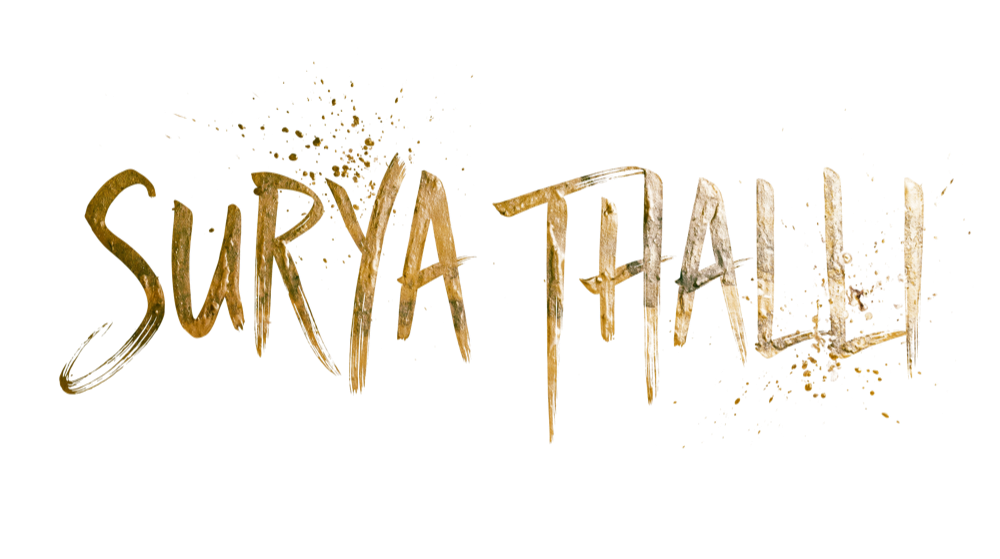

— Quotes
Some sentences stop you mid-thought.
They don't tell you anything new —
they remind you of what you already knew
but hadn't yet found words for.
"Learn from yesterday, live for today, hope for tomorrow. The important thing is not to stop questioning."
— Albert Einstein
Added — March 14, 2023
"Be yourself; everyone else is already taken."
— Oscar Wilde
Added — August 7, 2022
"The two most important days in your life are the day you are born and the day you find out why."
— Mark Twain
Added — November 22, 2024
"If you can do what you do best and be happy, you are further along in life than most people."
— Leonardo DiCaprio
Added — February 14, 2023
"The more you know who you are, and what you want, the less you let things upset you."
— Bob Harris
Added — September 9, 2025
"Get busy living, or get busy dying."
— Andy Dufresne
Added — October 31, 2022
"What you are not changing, you are choosing."
— Laurie Buchanan
Added — April 3, 2024
"If your happiness depends on the actions of others, you're at the mercy of things you cannot control."
— Epictetus
Added — January 17, 2026